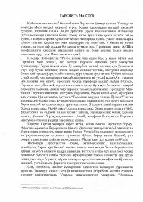

GMTopshirilgan vazifani bahonalarsiz, fidokorona va mas'uliyat bilan bajarish haqidagi motivatsion asar.
Ushbu asar mas'uliyat, tashabbuskorlik va topshirilgan vazifani hech qanday bahonalarsiz bajarish muhimligini tushuntiradi. Muallif general Garsiyaga maktubni yetkazib bergan Rouen misolida haqiqiy xodim va mas'uliyatli inson qanday bo'lishi kerakligini ko'rsatib beradi.